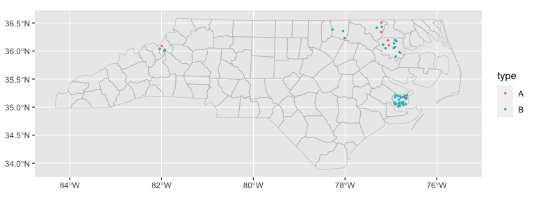
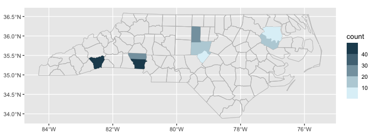

ggautomap helps when you have a spreadsheet/table of data that includes a column of place names, and you want to visualise that data on a map. It saves you from having to think about geospatial libraries when all you want to do is make a quick plot from your spreadsheet.
See the ‘Getting started’ article, vignette("ggautomap"), for some recipes for different types of plots it can make.
ggautomap works best if:
- your data is about regions/areas/countries etc.,
- each row corresponds to an individual observation or data point, and
- the locations names in your data are part of a map that is registered with cartographer.
ggautomap might not be right for you if …
… the place names in your location column aren’t known to cartographer. You’ll have to register the map data with
cartographer::register_map()or load a package that does this for you. This is fairly painless to set up, and can be reused for subsequent plots once you get it working.… your data is about points instead of regions, or has only a single row for each region with aggregate data.
… your data has latitude and longitude columns, or is already a geospatial object such as an sf dataframe.
… you want to manipulate the geometries or otherwise have more control.
ggautomapis aimed at the simple case, so the geometries are attached on the fly when the plot is compiled.
In most of these cases, you should instead use a combination of sf, ggplot2::geom_sf(), and possibly cartographer to have more direct control. If you just want the map insets from the vignette, see ggmapinset.
Installation
You can install ggautomap like so:
# CRAN release
install.packages('ggautomap')
# development version
install.packages('ggautomap', repos = c('https://cidm-ph.r-universe.dev', 'https://cloud.r-project.org'))Example
Let’s use the example dataset from cartographer:
library(cartographer)
head(nc_type_example_2)
#> county type
#> 1 MARTIN A
#> 2 ALAMANCE B
#> 3 BERTIE A
#> 4 CHATHAM B
#> 5 CHATHAM B
#> 6 HENDERSON BA possible workflow is to use cartographer::add_geometry() to convert this into a spatial data frame and then use ggplot2::geom_sf() to draw it.
ggautomap instead provides geoms that do this transparently as needed, so you don’t need to do a lot of boilerplate to wrangle the data into the right form before handing it off to the plotting code.
library(ggplot2)
library(ggautomap)
ggplot(nc_type_example_2, aes(location = county)) +
geom_boundaries(feature_type = "sf.nc") +
geom_geoscatter(aes(colour = type), size = 0.5) +
coord_automap(feature_type = "sf.nc")
ggplot(nc_type_example_2, aes(location = county)) +
geom_choropleth() +
geom_boundaries(feature_type = "sf.nc") +
scale_fill_steps(low = "#e6f9ff", high = "#00394d", na.value = "white") +
coord_automap(feature_type = "sf.nc")